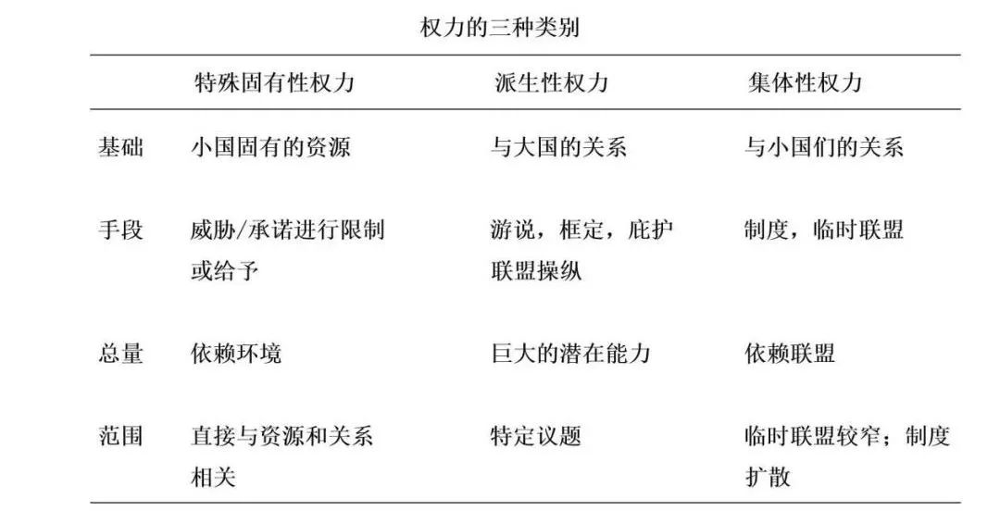

收录于合集 #理论研究 96个

作品简介
作者： Tom Long是英国华威大学政治与国际研究学院副教授，研究兴趣为国际关系理论、国际合作、区域一体化、拉美研究等领域。
编译： 吴皓玥（国政学人编译员，北京语言大学）
来源： Long, Tom. (2017). Small States, Great Power? Gaining Influence Through Intrinsic, Derivative, and Collective Power. International Studies Review , 19(2), 185–205.
内容提要
传统观点认为，小国没有足够的军事与经济资源，没有足够的强制力，因而也不会有太大的影响力。不过，今天的世界为小国的生存和繁荣提供了不少有利条件，小国的数量也在不断增长。那么，小国现在是否可以发展出一些非传统的权力，以获得更大的影响力？本文认为，小国能够在国际社会中利用特殊固有性权力、派生性权力和集体性权力，获得影响力并实现其国际政治的目标。其中，特殊固有性权力依赖于小国用以施加影响的资源，派生性权力依赖于小国与大国的关系，集体性权力依赖于提供支持的国家联盟。
文章导读
01
前言
当今，小国的生存和领土完整受到保护，小国受到的威胁减少，小国的数目增加。民主化、贸易自由化、战争的减少等条件促进了小国的繁荣。 同样的条件也会增强小国的影响力吗？
对小国的研究时而强调约束和限制，时而强调独立、韧性(resilience)、甚至权力。在冷战后的国际关系研究中，对小国具有的可能性的关注越来越普遍。这种关注不仅反映了更为有利的国际条件，对小国的不同理解还暗含了在国际关系中行使权力的不同意涵。文章将国家置于不对称关系的环境中，阐明了“小国”(small states)一词， 即关系性权力中的关系弱势(relational weakness)是小国的主要特征 。创建行为类别可以帮助学者从弱国的角度理解不对称关系的动态。 本文提出了三种小国可以获得并且与其特别相关的权力形式：特殊固有性权力(particular-intrinsic power)、派生性权力(derivative power)和集体性权力(collective power)。
本文的结构如下：文章的第一部分探讨了小国研究中所使用的权力概念的变化。文章的第二部分界定了上述权力分类中各权力的基础、范围、手段和总量，并结合不同的权力概念进行了解释。最后，本文论述了这些权力类别如何与小国产生特别的联系。
02
小国研究中的权力概念
在国际关系领域，现实主义垄断了权力这一概念。但在最近，许多关于小国的文献开始探讨小国发挥自主性和影响力的机会，而非强调其表现出来的依赖与软弱，即使是在它们面对大国的情况下。更为多元的权力途径为积极评价小国提供了更大的可能性。作者在这一节中重点介绍了有影响的权力概念如何与小国研究建立联系。
1.作为物质资源的权力
世界政治中的权力和影响力从根本上说是建立在拥有某些物质资源的基础上的，这种观念有着深刻的根源，并且现在仍然具有很大影响力。这种基于资源的定义便于量化和预测。物质资源通常与巴内特(Michael Barnett)和杜瓦尔(Raymond Duvall)所称的“强制性权力”(compulsory power)有关。人们通常认为，拥有资源与改变别人行为的能力相关。这一假设加强了对作为权力指标或权力本身的资源的重视。
“小国”的定义通常基于这些小国所拥有的资源总量，也就是说，它们拥有的资源不多。但是，量化在直观上的吸引力被看似任意的数值截断所破坏。即使权力被视为物质能力的总和，小国也不是无力的。例如，小国可能生产关键商品，而且战略位置也可以作为小国的资源。
2.权力与结构、议程、利益
新现实主义将结构定义为能力的分布，并将结构视为国家选择的约束。维塔尔(Vital David)得出结论认为，鉴于外部限制和威胁，小国很少能真正独立，被动或结盟是更有可能也更安全的路线。但汉德尔(Handel Michael)则指出了小国克服其脆弱性、适应不断变化的条件并生存下来的能力。
对现实主义的结构和权力概念的批评者指出，权力的影响并不总是可见的；权力可以反映在议程和“非决策”(non- decisions)、弱国如何界定自身利益、以及塑造框架并引导进程的结构当中。小国可以逐渐改变全球经济结构，以使其有利于它们的利益。
考克斯之后的批判学者认为，深层次的结构不仅限制了弱国的决策，还塑造了它们的身份、利益和行动的可能性。但巴内特和杜瓦尔认为，虽然结构决定了小国的身份和利益，但两者是相互构成的关系。结构的影响不是单向的，施动者(agent)可以复制并可能改变结构。另外，建构主义者强调了小国通过议程和话语施加影响的途径。这些途径可能是直接的，属于结构性权力，也可能是扩散性的(diffuse)，即生产性权力(productive power)。综上所述，虽然结构和议程可能限制小国，但权力的这些非物质方面也提供了新的可能性。
3.通过相互依赖和制度获得的权力
对权力和小国的讨论从关于相互依赖和制度的自由主义国际关系理论中得到了启发。基欧汉和奈表明，权力——即改变他人行为的能力和抵制改变自己行为的压力的能力——在不同问题领域有很大区别。这种对权力的看法在小国研究中有重要影响。复合相互依赖增加了小国的影响力和灵活性。研究小国的学者们还采纳并修改了奈的“软权力”的概念，这一概念弱化了军事方面权力的重要性，由此为缺乏传统权力资源的国家提供了另一种选择。学者们证明，小国可以在相互依赖的世界中取得经济上的成功，也可以发挥影响。
另外，学者们还在自由主义国际关系理论的基础上研究小国如何利用制度来加强安全和追求利益。巴内特和杜瓦尔将制度性权力定义为“行为体以间接方式控制他者”，例如通过制定规则和程序。大国经常带头努力在世界政治中建立制度，小国则经常求助于国际法律和制度，并把它们作为合作尝试的中心和限制大国单边主义的手段。因此，制度既可以被理解为行使权力的场所，也可以被理解为对其他国家行使权力和与其他国家共同行使权力的手段。由此，小国可以寻求和利用影响力，精确地约束其他国家，增强其自主性。
4.通过规范获得的权力
与规范、话语和观念有关的权力概念与建构主义国际关系理论联系最为紧密。曼纳斯(Ian Manners)认为“规范性权力”(normative power)是“塑造或改变国际关系中被视为正常的事物的能力”。由于推广观念的能力与国家大小无关，因此这种权力形式引起了与小国相关的极大关注。
最近，小国在多个领域作为规范倡导者(norm entrepreneurs)发挥作用。不过，在大多数情况下，推进规范对于小国来说是一个长期的命题。也就是说，通过改变国际规范，小国不会试图影响某一特定结果，而是试图通过有利的行为方式来重塑更利于他们的国际环境。反对单边干预的规范代表着小国的重大胜利。旨在改变国际规范的努力符合巴内特和杜瓦尔的“生产性权力”，因为它寻求重建扩散性国际社会关系。
03
小国权力的基础与手段
达尔对权力的分析框架是研究一个行为体对另一行为体所施加权力的基础、手段、总量和范围。根据达尔的叙述，一个行为体的 权力基础 由所有它可利用以影响另一行为体行为的资源组成； 权力手段 包括一个行为体如何利用其权力基础，例如通过承诺和威胁； 权力范围 包括行为体A可以影响到的行为体B的回应范围；（在给定范围下）A的行动改变B的行为的可能性是 权力的总量 ，同时学者也应考虑回应这一权力的行为体的数量与类型。
达尔的方法适合研究小国，因为其中重要的不是国家拥有的资源，而是权力的作用(effects)。除此之外，对权力进行更广泛的解释，使其更符合结构性、制度性和生产性权力的方面，意味着为小国提供了更多的机会。小国也能制造制度和话语，它们的行动可以（重新）组成结构。
小国可以通过三种权力最成功地追求自己的利益：特殊固有性权力、派生性权力和集体性权力。 尽管非小国也可以使用这些类型的权力，但小国——至少是二元意义上的小国——具有相对稀缺的国际强制能力，由于这种限制，小国被迫在更大程度上依赖这些权力，并发展特定的权力基础和手段以获取成功。
04
特殊固有性权力、派生性权力和集体性权力
权力的基础和手段这两方面可以理解为小国(A)及其行动的性质。了解权力的总量和范围要求分析人员考虑行动的目标(B)，并将权力的行使置于特定的环境中。这些权力类型通过应用某些手段使小国所能获得的基础与其目标相匹配。其中，权力手段可能针对特定行为体，也可能是是扩散性的。
1.特殊固有性权力
当从能力或“潜在权力”的角度来讨论国际关系中的权力时，它通常与固有性权力同义。摩根索的权力标准在很大程度上符合这一含义。虽然小国缺乏许多符合标准分类的能力，但它们可能具有特殊形式的固有性权力。特殊的固有资源是潜在的权力基础，但这些资源（不如庞大的军事力量）只有通过（实际）运用，即给予其手段、并将其应用于特定的目标或范围时，才被理解为权力。权力的总量在很大程度上依赖于特殊固有性权力被应用的环境。
正如大国通过“胡萝卜加大棒”的方式利用其固有资源一样，强制性权力是特殊固有性权力最直接可见的形式。它既可以有更广泛的内涵，也可以作为其他形式权力的补充。特殊固有性权力可以赋予一个国家在国际组织中的中心地位，使其能够塑造规则（制度性权力）。它也可以塑造一个小国和一个大国之间的关系（结构性权力）。特殊固有性权力还可以将物质资源和观念资源结合起来，比如，身份就可以作为权力行使的基础。小国的言论和行动，也就是其表现，以及其他国家的看法，有助于建立小国的身份并塑造其与其他国家的关系。有了这个观念基础，小国就可以采取行动（手段），这种手段至少可以部分地根据其身份来解释。这些特殊的固有资源是以身份为基础的，但国家可能通过各种手段在行使直接或扩散性权力时调动这些资源。
2.派生性权力
由于本身缺乏重要的物质能力，小国可以通过说服大国采取有利于其利益的行动来获得权力。通过使用派生性权力，小国领导人甚至可以对大国施加影响。不过，这种力量并不是完全的。在不平等的联盟中，小国实现目标的可能性极为有限。
派生性权力的基础可以理解为小盟国与大国之间的构成性关系(constitutive relationship)。派生性权力的手段因小国的目标和与大国的关系而异。在特别友好的关系中，小国可能有参与政策讨论的机会；在多元化的体系中，小国可以发起运动，通过共同族裔或意识形态的支持者影响政策，比如立法游说；在更有争议的关系中，小国以背叛相威胁，进行庇护联盟操纵（patron alliance manipulation）。
派生性权力的适用范围可能很窄。一个小国试图改变一个大国的整体安排是不现实的。然而，小国有可能把大国在某一特定利益问题上的政策变为针对小国的政策，因为物质力量上的不对称可能在一定程度上会被利益强度以及利于小国的专业技能上的不对称所抵消。
派生性权力的优势在于，它提供了一种可能性，即通过大国的棱镜放大小国的影响力——尽管随之而来的是控制结果的能力下降。派生性权力可以为小国提供比第三方总量大得多的权力，而且可能成本更低。
3.集体性权力
集体性权力可以是强制性的，也可以是制度性的。当小国集团通过威胁或承诺直接迫使一个大国改变其政策时，这是强制性权力。更为常见的是，这种情况可能会通过给予小国正式的保护和发言权的制度得以调解。当制度被用于促进和发展影响更为广泛的国际社会规范时，集体性权力也可以是“生产性的”(productive)。所以，小国一直是积极的制度参与者和建立者。
集体性权力的基础是一个小国与其他小国的关系。集体性权力在伙伴国方面与派生性权力不同，而且集体性权力中的伙伴国也不能单独帮助小国实现其目标。在机制内部，调节国家间关系的规则可以作为权力的基础。但这种形式的权力不是小国独有的。权力手段涉及到社会关系的运用，包括构成集体性权力基础的规则。单一小国通过在组织或制度中行动，并根据机制的利益提出自己的目标，从而获得权力。小国可能比大国更有能力利用这一手段，因为它们可以被视为大国之间的有效中介，或是因为从大国的角度看，对它们的让步是次要的。在实践中，行使集体性权力的国家采取的重要手段包括议程设置、共同利益的定义和说服。
与其他形式的权力一样，集体性权力的范围和总量在很大程度上取决于环境。集体性权力的范围在潜在意义上是巨大的。如果小国能影响制度规则和程序，那么这些规则的影响可能是“粘性的”(sticky)，而且可能是无法预见的。由于难以在不同的国家之间形成和维持共识，小国组成的临时联盟的范围通常较窄。与在广泛议程上团结一群国家相比，在一个问题上进行团结更可行。在与一个大国打交道时，集体性权力的总量很可能非常低。当根本利益发挥作用时，短期内一个大国可能会凌驾于一个小国联盟之上。然而，这些联盟可以在以其他方式发挥有意义的影响。首先，它们可能会推动其他国家向小国所期望的方向前进。第二，当其他国家的利益较分散或界定不清时，它们可以在影响议程和影响利益界定方面发挥重要作用。最后，小国联盟可以对大国行动进行限制或否决。在这种情况下，由于小国数目众多，它们可以拥有超过它们在世界人口中所占份额的合法性。
05
结论
小国可以利用制度性、结构性、生产性权力以及非传统形式的强制性权力，发展不太传统的权力基础和手段。这种小国研究的方法与关于权力的更广泛的辩论相联系。结合巴内特和杜瓦尔的分类法与达尔的分析框架等其他对权力的分析，文章提出小国行使权力的三种方式。这些权力并不只属于物质能力不足的国家。事实上，这些类型的权力可能对今天的所有国家都更重要，因为军事力量的可接受性和显著性降低，相互依赖增强，规范和制度更重要。然而，国家拥有的军事和经济资源越少，它就越应该专门研究和发展这些不同的权力途径。

专门研究特殊的物质和观念资源可以增加小国的权力；小国还应强调基于关系的力量，以便利用较大盟国的力量，并通过联盟和制度加强它们在国际社会的地位和影响。这三种权力形式中有两种表明小国不太可能单独追求其目标。这表明，虽然 小国本身不一定具有可比性，但它们的行动和关系具有可比性 。关于小国权力的进一步研究可能会转向对具体环境的研究： 小国什么时候最有可能转向某种类型的权力？回归小国权力的基础和手段以及其作用的范围和总量的研究是一种有前景的途径。
译者评述
权力概念是国际关系的核心。然而，学界对权力的讨论往往只集中于以军事为导向、以资源为基础的强制力。巴内特和杜瓦尔曾指出，单一的讨论不仅会忽视国际政治中不同形式的权力，也无法理解行为体如何在不同程度上得到能力或被限制能力。他们将权力理解为一种在社会关系中、并通过社会关系产生影响，从而塑造行为体决定其环境和命运的能力。因此就可以从两方面分析权力，即权力运作所通过的社会关系（互动关系或结构关系），以及使这种影响产生的社会关系的特性（具体的/直接的或扩散的/间接的），进而将权力形式分为强制性权力、制度性权力、结构性权力和生产性权力。
本文通过借鉴巴内特和杜瓦尔的权力分类，同样在一定程度上挑战了学界（主要是现实主义）对权力的传统理解。这种挑战并不是否认强制性权力的重要作用，因为对于拥有强大军事力量和经济力量的所谓大国来说，强制性权力仍然是我们应重点关注的因素；本文强调的是被忽视的其他形式的权力对于小国的重要意义。显而易见，对于小国来说，虽然没有足够的传统资源与强制力，但它们仍然可以通过发展包括特殊固有性权力、派生性权力和集体性权力在内的权力形式发挥自己的影响力。所以，权力的形式是多种多样的，没有最有效的权力形式并不是就等于没有权力，如果可以有效地运用到其他的权力资源和权力关系，小国同样可以占据国际政治中的重要地位。这种权力概念的理解对我们认知到当今小国的作用大有裨益。
除此之外，本文在对小国权力研究的重点方面也提供了有益的思考。对小国极为重要的三种权力中，有一种依赖于小国自身可能拥有的特殊资源，另外两种则都是关系性权力。所以，小国的关系性权力（本文中指小国与大国的关系、以及与其他小国们的关系）非常重要，研究小国在国际政治中的作用时可以着重关注此种权力。
责编 | 王川 陈勇
排版 | 贺奕 黄晨蕊
文章观点不代表本平台观点，本平台评译分享的文章均出于专业学习之用, 不以任何盈利为目的，内容主要呈现对原文的介绍，原文内容请通过各高校购买的数据库自行下载。
好好学习，天天“在看”